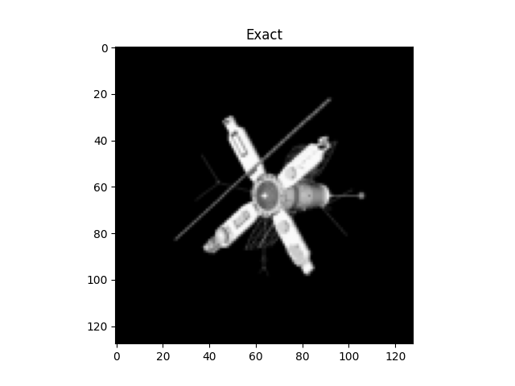
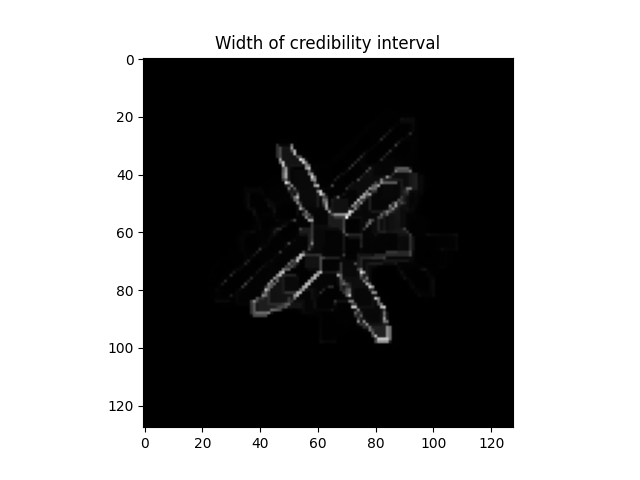
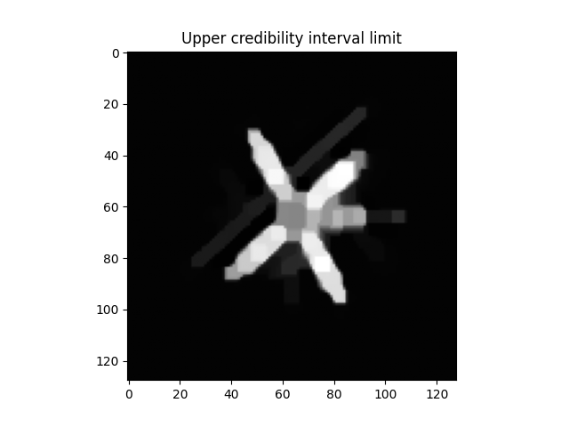

Note
Go to the end to download the full example code.
2D Deconvolution#
In this example we show how to quantify the uncertainty of a solution to a 2D deconvolution problem.
First we import the modules needed.
import numpy as np
from cuqi.testproblem import Deconvolution2D
from cuqi.distribution import Gaussian, LMRF
from cuqi.problem import BayesianProblem
/home/runner/work/CUQIpy/CUQIpy/cuqi/data/_data.py:1: UserWarning: pkg_resources is deprecated as an API. See https://setuptools.pypa.io/en/latest/pkg_resources.html. The pkg_resources package is slated for removal as early as 2025-11-30. Refrain from using this package or pin to Setuptools<81.
import pkg_resources
/home/runner/work/CUQIpy/CUQIpy/cuqi/likelihood/__init__.py:1: SyntaxWarning: invalid escape sequence '\p'
"""
/home/runner/work/CUQIpy/CUQIpy/cuqi/model/_model.py:17: SyntaxWarning: invalid escape sequence '\m'
"""Generic model defined by a forward operator.
/home/runner/work/CUQIpy/CUQIpy/cuqi/geometry/_geometry.py:769: SyntaxWarning: invalid escape sequence '\s'
"""
/home/runner/work/CUQIpy/CUQIpy/cuqi/geometry/_geometry.py:938: SyntaxWarning: invalid escape sequence '\s'
'''
/home/runner/work/CUQIpy/CUQIpy/cuqi/geometry/_product_geometry.py:5: SyntaxWarning: invalid escape sequence '\*'
""" A class for representing a product geometry. A product geometry
/home/runner/.local/lib/python3.12/site-packages/arviz/__init__.py:39: FutureWarning:
ArviZ is undergoing a major refactor to improve flexibility and extensibility while maintaining a user-friendly interface.
Some upcoming changes may be backward incompatible.
For details and migration guidance, visit: https://python.arviz.org/en/latest/user_guide/migration_guide.html
warn(
/home/runner/work/CUQIpy/CUQIpy/cuqi/distribution/_beta.py:9: SyntaxWarning: invalid escape sequence '\G'
"""
/home/runner/work/CUQIpy/CUQIpy/cuqi/distribution/_cmrf.py:10: SyntaxWarning: invalid escape sequence '\s'
"""Cauchy distribution on the difference between neighboring nodes.
/home/runner/work/CUQIpy/CUQIpy/cuqi/distribution/_gamma.py:7: SyntaxWarning: invalid escape sequence '\G'
"""
/home/runner/work/CUQIpy/CUQIpy/cuqi/distribution/_modified_half_normal.py:8: SyntaxWarning: invalid escape sequence '\p'
"""
/home/runner/work/CUQIpy/CUQIpy/cuqi/distribution/_gmrf.py:13: SyntaxWarning: invalid escape sequence '\s'
""" Gaussian Markov random field (GMRF).
/home/runner/work/CUQIpy/CUQIpy/cuqi/distribution/_inverse_gamma.py:8: SyntaxWarning: invalid escape sequence '\e'
"""
/home/runner/work/CUQIpy/CUQIpy/cuqi/distribution/_lmrf.py:8: SyntaxWarning: invalid escape sequence '\s'
"""Laplace distribution on the difference between neighboring nodes.
/home/runner/work/CUQIpy/CUQIpy/cuqi/distribution/_laplace.py:5: SyntaxWarning: invalid escape sequence '\e'
""" Laplace distribution.
/home/runner/work/CUQIpy/CUQIpy/cuqi/distribution/_smoothed_laplace.py:6: SyntaxWarning: invalid escape sequence '\e'
""" Smoothed Laplace distribution.
/home/runner/work/CUQIpy/CUQIpy/cuqi/distribution/_joint_distribution.py:12: SyntaxWarning: invalid escape sequence '\m'
"""
/home/runner/work/CUQIpy/CUQIpy/cuqi/solver/_solver.py:168: SyntaxWarning: invalid escape sequence '\m'
"""Wrapper for :meth:`scipy.optimize.least_squares`.
/home/runner/work/CUQIpy/CUQIpy/cuqi/solver/_solver.py:235: SyntaxWarning: invalid escape sequence '\m'
"""Wrapper for :meth:`scipy.optimize.lsq_linear`.
/home/runner/work/CUQIpy/CUQIpy/cuqi/solver/_solver.py:799: SyntaxWarning: invalid escape sequence '\|'
""" Preprocessing
/home/runner/work/CUQIpy/CUQIpy/cuqi/solver/_solver.py:883: SyntaxWarning: invalid escape sequence '\|'
"""(Euclidean) proximal operator of the \|x\|_1 norm.
/home/runner/work/CUQIpy/CUQIpy/cuqi/implicitprior/_restorator.py:101: SyntaxWarning: invalid escape sequence '\l'
"""
/home/runner/work/CUQIpy/CUQIpy/cuqi/problem/_problem.py:22: SyntaxWarning: invalid escape sequence '\m'
""" Representation of a Bayesian inverse problem defined by any number of densities (distributions and likelihoods), e.g.
/home/runner/work/CUQIpy/CUQIpy/cuqi/testproblem/_testproblem.py:145: SyntaxWarning: invalid escape sequence '\m'
"""
/home/runner/work/CUQIpy/CUQIpy/cuqi/testproblem/_testproblem.py:1112: SyntaxWarning: invalid escape sequence '\m'
"""
Step 1: Deterministic model#
Consider the deterministic inverse problem
where \(\mathbf{A}\) is a matrix representing a 2D convolution operation and \(\mathbf{y}\) and \(\mathbf{x}\) are the data and unknown (solution to the inverse problem) respectively.
A linear forward model like \(\mathbf{A}\) is represented by a LinearModel
and any data (like some observed data \(\mathbf{y}^\mathrm{obs}\)) as a CUQIarray.
The easiest way to get these two components is to use the built-in testproblems. Let us extract the model and data for a 2D deconvolution.
A, y_obs, info = Deconvolution2D().get_components()
Step 2: Prior model#
Now we aim to represent our prior knowledge of the unknown image. In this case, let us assume that the unknown is piecewise constant. This can be modelled by assuming a Laplace difference prior. The Laplace difference prior can be defined as
where \(\delta\) is the scale parameter defining how likely jumps from one pixel value to another are in the horizontal and vertical directions.
This distribution comes pre-defined in CUQIpy as the cuqi.distribution.LMRF.
Notice we have to specify the geometry of the unknown.
x = LMRF(location=0, scale=0.1, geometry=A.domain_geometry)
Step 3: Likelihood model#
Suppose our data is corrupted by a Gaussian noise so our observational model is
where \(\sigma^2\) is a noise variance that we know.
We can represent \(\mathbf{y}\mid \mathbf{x}\) as a cuqi.distribution.Distribution object.
We often call the distribution of \(\mathbf{y}\mid \mathbf{x}\) the data distribution.
y = Gaussian(mean=A@x, cov=0.01)
Step 4: Posterior sampling#
In actuality we are interested in conditioning on the observed data \(\mathbf{y}^\mathrm{obs}\), to obtain the posterior distribution
and then sampling from this posterior distribution.
In CUQIpy, we the easiest way to do this is to use the cuqi.problem.BayesianProblem class.
# Create Bayesian problem and set observed data (conditioning)
BP = BayesianProblem(y, x).set_data(y=y_obs)
After setting the data, we can sample from the posterior using the cuqi.problem.BayesianProblem.sample_posterior()
method. Notice that a well-suited sampler is automatically chosen based on the model, likelihood and prior chosen.
# Sample posterior
samples = BP.sample_posterior(200)
!!!!!!!!!!!!!!!!!!!!!!!!!!!!!!!!!!!!!!!!!!!!!!!!!!!!!!!!!!
!!! Automatic sampler selection is a work-in-progress. !!!
!!! Always validate the computed results. !!!
!!!!!!!!!!!!!!!!!!!!!!!!!!!!!!!!!!!!!!!!!!!!!!!!!!!!!!!!!!
Using cuqi.sampler Unadjusted Gaussian Laplace Approximation (UGLA) sampler.
burn-in: 20%
Warmup: 0%| | 0/40 [00:00<?, ?it/s]
Warmup: 0%| | 0/40 [00:00<?, ?it/s, acc rate: 100.00%]
Warmup: 2%|▎ | 1/40 [00:00<00:06, 6.44it/s, acc rate: 100.00%]
Warmup: 2%|▎ | 1/40 [00:00<00:06, 6.44it/s, acc rate: 100.00%]
Warmup: 5%|▌ | 2/40 [00:00<00:05, 6.44it/s, acc rate: 100.00%]
Warmup: 5%|▌ | 2/40 [00:00<00:05, 6.44it/s, acc rate: 100.00%]
Warmup: 8%|▊ | 3/40 [00:00<00:05, 6.44it/s, acc rate: 100.00%]
Warmup: 8%|▊ | 3/40 [00:00<00:05, 6.44it/s, acc rate: 100.00%]
Warmup: 10%|█ | 4/40 [00:00<00:05, 6.44it/s, acc rate: 100.00%]
Warmup: 10%|█ | 4/40 [00:00<00:05, 6.44it/s, acc rate: 100.00%]
Warmup: 12%|█▎ | 5/40 [00:00<00:05, 6.43it/s, acc rate: 100.00%]
Warmup: 12%|█▎ | 5/40 [00:00<00:05, 6.43it/s, acc rate: 100.00%]
Warmup: 15%|█▌ | 6/40 [00:00<00:05, 6.44it/s, acc rate: 100.00%]
Warmup: 15%|█▌ | 6/40 [00:01<00:05, 6.44it/s, acc rate: 100.00%]
Warmup: 18%|█▊ | 7/40 [00:01<00:05, 6.42it/s, acc rate: 100.00%]
Warmup: 18%|█▊ | 7/40 [00:01<00:05, 6.42it/s, acc rate: 100.00%]
Warmup: 20%|██ | 8/40 [00:01<00:04, 6.43it/s, acc rate: 100.00%]
Warmup: 20%|██ | 8/40 [00:01<00:04, 6.43it/s, acc rate: 100.00%]
Warmup: 22%|██▎ | 9/40 [00:01<00:04, 6.42it/s, acc rate: 100.00%]
Warmup: 22%|██▎ | 9/40 [00:01<00:04, 6.42it/s, acc rate: 100.00%]
Warmup: 25%|██▌ | 10/40 [00:01<00:04, 6.43it/s, acc rate: 100.00%]
Warmup: 25%|██▌ | 10/40 [00:01<00:04, 6.43it/s, acc rate: 100.00%]
Warmup: 28%|██▊ | 11/40 [00:01<00:04, 6.44it/s, acc rate: 100.00%]
Warmup: 28%|██▊ | 11/40 [00:01<00:04, 6.44it/s, acc rate: 100.00%]
Warmup: 30%|███ | 12/40 [00:01<00:04, 6.39it/s, acc rate: 100.00%]
Warmup: 30%|███ | 12/40 [00:02<00:04, 6.39it/s, acc rate: 100.00%]
Warmup: 32%|███▎ | 13/40 [00:02<00:04, 6.40it/s, acc rate: 100.00%]
Warmup: 32%|███▎ | 13/40 [00:02<00:04, 6.40it/s, acc rate: 100.00%]
Warmup: 35%|███▌ | 14/40 [00:02<00:04, 6.41it/s, acc rate: 100.00%]
Warmup: 35%|███▌ | 14/40 [00:02<00:04, 6.41it/s, acc rate: 100.00%]
Warmup: 38%|███▊ | 15/40 [00:02<00:03, 6.42it/s, acc rate: 100.00%]
Warmup: 38%|███▊ | 15/40 [00:02<00:03, 6.42it/s, acc rate: 100.00%]
Warmup: 40%|████ | 16/40 [00:02<00:03, 6.43it/s, acc rate: 100.00%]
Warmup: 40%|████ | 16/40 [00:02<00:03, 6.43it/s, acc rate: 100.00%]
Warmup: 42%|████▎ | 17/40 [00:02<00:03, 6.44it/s, acc rate: 100.00%]
Warmup: 42%|████▎ | 17/40 [00:02<00:03, 6.44it/s, acc rate: 100.00%]
Warmup: 45%|████▌ | 18/40 [00:02<00:03, 6.43it/s, acc rate: 100.00%]
Warmup: 45%|████▌ | 18/40 [00:02<00:03, 6.43it/s, acc rate: 100.00%]
Warmup: 48%|████▊ | 19/40 [00:02<00:03, 6.43it/s, acc rate: 100.00%]
Warmup: 48%|████▊ | 19/40 [00:03<00:03, 6.43it/s, acc rate: 100.00%]
Warmup: 50%|█████ | 20/40 [00:03<00:03, 6.44it/s, acc rate: 100.00%]
Warmup: 50%|█████ | 20/40 [00:03<00:03, 6.44it/s, acc rate: 100.00%]
Warmup: 52%|█████▎ | 21/40 [00:03<00:02, 6.43it/s, acc rate: 100.00%]
Warmup: 52%|█████▎ | 21/40 [00:03<00:02, 6.43it/s, acc rate: 100.00%]
Warmup: 55%|█████▌ | 22/40 [00:03<00:02, 6.43it/s, acc rate: 100.00%]
Warmup: 55%|█████▌ | 22/40 [00:03<00:02, 6.43it/s, acc rate: 100.00%]
Warmup: 57%|█████▊ | 23/40 [00:03<00:02, 6.44it/s, acc rate: 100.00%]
Warmup: 57%|█████▊ | 23/40 [00:03<00:02, 6.44it/s, acc rate: 100.00%]
Warmup: 60%|██████ | 24/40 [00:03<00:02, 6.42it/s, acc rate: 100.00%]
Warmup: 60%|██████ | 24/40 [00:03<00:02, 6.42it/s, acc rate: 100.00%]
Warmup: 62%|██████▎ | 25/40 [00:03<00:02, 6.42it/s, acc rate: 100.00%]
Warmup: 62%|██████▎ | 25/40 [00:04<00:02, 6.42it/s, acc rate: 100.00%]
Warmup: 65%|██████▌ | 26/40 [00:04<00:02, 6.43it/s, acc rate: 100.00%]
Warmup: 65%|██████▌ | 26/40 [00:04<00:02, 6.43it/s, acc rate: 100.00%]
Warmup: 68%|██████▊ | 27/40 [00:04<00:02, 6.42it/s, acc rate: 100.00%]
Warmup: 68%|██████▊ | 27/40 [00:04<00:02, 6.42it/s, acc rate: 100.00%]
Warmup: 70%|███████ | 28/40 [00:04<00:01, 6.43it/s, acc rate: 100.00%]
Warmup: 70%|███████ | 28/40 [00:04<00:01, 6.43it/s, acc rate: 100.00%]
Warmup: 72%|███████▎ | 29/40 [00:04<00:01, 6.43it/s, acc rate: 100.00%]
Warmup: 72%|███████▎ | 29/40 [00:04<00:01, 6.43it/s, acc rate: 100.00%]
Warmup: 75%|███████▌ | 30/40 [00:04<00:01, 6.44it/s, acc rate: 100.00%]
Warmup: 75%|███████▌ | 30/40 [00:04<00:01, 6.44it/s, acc rate: 100.00%]
Warmup: 78%|███████▊ | 31/40 [00:04<00:01, 6.44it/s, acc rate: 100.00%]
Warmup: 78%|███████▊ | 31/40 [00:04<00:01, 6.44it/s, acc rate: 100.00%]
Warmup: 80%|████████ | 32/40 [00:04<00:01, 6.44it/s, acc rate: 100.00%]
Warmup: 80%|████████ | 32/40 [00:05<00:01, 6.44it/s, acc rate: 100.00%]
Warmup: 82%|████████▎ | 33/40 [00:05<00:01, 6.43it/s, acc rate: 100.00%]
Warmup: 82%|████████▎ | 33/40 [00:05<00:01, 6.43it/s, acc rate: 100.00%]
Warmup: 85%|████████▌ | 34/40 [00:05<00:00, 6.44it/s, acc rate: 100.00%]
Warmup: 85%|████████▌ | 34/40 [00:05<00:00, 6.44it/s, acc rate: 100.00%]
Warmup: 88%|████████▊ | 35/40 [00:05<00:00, 6.45it/s, acc rate: 100.00%]
Warmup: 88%|████████▊ | 35/40 [00:05<00:00, 6.45it/s, acc rate: 100.00%]
Warmup: 90%|█████████ | 36/40 [00:05<00:00, 6.45it/s, acc rate: 100.00%]
Warmup: 90%|█████████ | 36/40 [00:05<00:00, 6.45it/s, acc rate: 100.00%]
Warmup: 92%|█████████▎| 37/40 [00:05<00:00, 6.43it/s, acc rate: 100.00%]
Warmup: 92%|█████████▎| 37/40 [00:05<00:00, 6.43it/s, acc rate: 100.00%]
Warmup: 95%|█████████▌| 38/40 [00:05<00:00, 6.43it/s, acc rate: 100.00%]
Warmup: 95%|█████████▌| 38/40 [00:06<00:00, 6.43it/s, acc rate: 100.00%]
Warmup: 98%|█████████▊| 39/40 [00:06<00:00, 6.43it/s, acc rate: 100.00%]
Warmup: 98%|█████████▊| 39/40 [00:06<00:00, 6.43it/s, acc rate: 100.00%]
Warmup: 100%|██████████| 40/40 [00:06<00:00, 6.42it/s, acc rate: 100.00%]
Warmup: 100%|██████████| 40/40 [00:06<00:00, 6.43it/s, acc rate: 100.00%]
Sample: 0%| | 0/200 [00:00<?, ?it/s]
Sample: 0%| | 0/200 [00:00<?, ?it/s, acc rate: 100.00%]
Sample: 0%| | 1/200 [00:00<00:30, 6.42it/s, acc rate: 100.00%]
Sample: 0%| | 1/200 [00:00<00:30, 6.42it/s, acc rate: 100.00%]
Sample: 1%| | 2/200 [00:00<00:30, 6.44it/s, acc rate: 100.00%]
Sample: 1%| | 2/200 [00:00<00:30, 6.44it/s, acc rate: 100.00%]
Sample: 2%|▏ | 3/200 [00:00<00:30, 6.45it/s, acc rate: 100.00%]
Sample: 2%|▏ | 3/200 [00:00<00:30, 6.45it/s, acc rate: 100.00%]
Sample: 2%|▏ | 4/200 [00:00<00:30, 6.43it/s, acc rate: 100.00%]
Sample: 2%|▏ | 4/200 [00:00<00:30, 6.43it/s, acc rate: 100.00%]
Sample: 2%|▎ | 5/200 [00:00<00:30, 6.44it/s, acc rate: 100.00%]
Sample: 2%|▎ | 5/200 [00:00<00:30, 6.44it/s, acc rate: 100.00%]
Sample: 3%|▎ | 6/200 [00:00<00:30, 6.45it/s, acc rate: 100.00%]
Sample: 3%|▎ | 6/200 [00:01<00:30, 6.45it/s, acc rate: 100.00%]
Sample: 4%|▎ | 7/200 [00:01<00:29, 6.44it/s, acc rate: 100.00%]
Sample: 4%|▎ | 7/200 [00:01<00:29, 6.44it/s, acc rate: 100.00%]
Sample: 4%|▍ | 8/200 [00:01<00:29, 6.44it/s, acc rate: 100.00%]
Sample: 4%|▍ | 8/200 [00:01<00:29, 6.44it/s, acc rate: 100.00%]
Sample: 4%|▍ | 9/200 [00:01<00:29, 6.44it/s, acc rate: 100.00%]
Sample: 4%|▍ | 9/200 [00:01<00:29, 6.44it/s, acc rate: 100.00%]
Sample: 5%|▌ | 10/200 [00:01<00:29, 6.44it/s, acc rate: 100.00%]
Sample: 5%|▌ | 10/200 [00:01<00:29, 6.44it/s, acc rate: 100.00%]
Sample: 6%|▌ | 11/200 [00:01<00:29, 6.43it/s, acc rate: 100.00%]
Sample: 6%|▌ | 11/200 [00:01<00:29, 6.43it/s, acc rate: 100.00%]
Sample: 6%|▌ | 12/200 [00:01<00:29, 6.40it/s, acc rate: 100.00%]
Sample: 6%|▌ | 12/200 [00:02<00:29, 6.40it/s, acc rate: 100.00%]
Sample: 6%|▋ | 13/200 [00:02<00:29, 6.42it/s, acc rate: 100.00%]
Sample: 6%|▋ | 13/200 [00:02<00:29, 6.42it/s, acc rate: 100.00%]
Sample: 7%|▋ | 14/200 [00:02<00:28, 6.42it/s, acc rate: 100.00%]
Sample: 7%|▋ | 14/200 [00:02<00:28, 6.42it/s, acc rate: 100.00%]
Sample: 8%|▊ | 15/200 [00:02<00:28, 6.42it/s, acc rate: 100.00%]
Sample: 8%|▊ | 15/200 [00:02<00:28, 6.42it/s, acc rate: 100.00%]
Sample: 8%|▊ | 16/200 [00:02<00:28, 6.44it/s, acc rate: 100.00%]
Sample: 8%|▊ | 16/200 [00:02<00:28, 6.44it/s, acc rate: 100.00%]
Sample: 8%|▊ | 17/200 [00:02<00:28, 6.44it/s, acc rate: 100.00%]
Sample: 8%|▊ | 17/200 [00:02<00:28, 6.44it/s, acc rate: 100.00%]
Sample: 9%|▉ | 18/200 [00:02<00:28, 6.44it/s, acc rate: 100.00%]
Sample: 9%|▉ | 18/200 [00:02<00:28, 6.44it/s, acc rate: 100.00%]
Sample: 10%|▉ | 19/200 [00:02<00:28, 6.44it/s, acc rate: 100.00%]
Sample: 10%|▉ | 19/200 [00:03<00:28, 6.44it/s, acc rate: 100.00%]
Sample: 10%|█ | 20/200 [00:03<00:27, 6.44it/s, acc rate: 100.00%]
Sample: 10%|█ | 20/200 [00:03<00:27, 6.44it/s, acc rate: 100.00%]
Sample: 10%|█ | 21/200 [00:03<00:27, 6.44it/s, acc rate: 100.00%]
Sample: 10%|█ | 21/200 [00:03<00:27, 6.44it/s, acc rate: 100.00%]
Sample: 11%|█ | 22/200 [00:03<00:27, 6.43it/s, acc rate: 100.00%]
Sample: 11%|█ | 22/200 [00:03<00:27, 6.43it/s, acc rate: 100.00%]
Sample: 12%|█▏ | 23/200 [00:03<00:27, 6.44it/s, acc rate: 100.00%]
Sample: 12%|█▏ | 23/200 [00:03<00:27, 6.44it/s, acc rate: 100.00%]
Sample: 12%|█▏ | 24/200 [00:03<00:27, 6.44it/s, acc rate: 100.00%]
Sample: 12%|█▏ | 24/200 [00:03<00:27, 6.44it/s, acc rate: 100.00%]
Sample: 12%|█▎ | 25/200 [00:03<00:27, 6.43it/s, acc rate: 100.00%]
Sample: 12%|█▎ | 25/200 [00:04<00:27, 6.43it/s, acc rate: 100.00%]
Sample: 13%|█▎ | 26/200 [00:04<00:27, 6.42it/s, acc rate: 100.00%]
Sample: 13%|█▎ | 26/200 [00:04<00:27, 6.42it/s, acc rate: 100.00%]
Sample: 14%|█▎ | 27/200 [00:04<00:26, 6.42it/s, acc rate: 100.00%]
Sample: 14%|█▎ | 27/200 [00:04<00:26, 6.42it/s, acc rate: 100.00%]
Sample: 14%|█▍ | 28/200 [00:04<00:26, 6.43it/s, acc rate: 100.00%]
Sample: 14%|█▍ | 28/200 [00:04<00:26, 6.43it/s, acc rate: 100.00%]
Sample: 14%|█▍ | 29/200 [00:04<00:26, 6.43it/s, acc rate: 100.00%]
Sample: 14%|█▍ | 29/200 [00:04<00:26, 6.43it/s, acc rate: 100.00%]
Sample: 15%|█▌ | 30/200 [00:04<00:26, 6.45it/s, acc rate: 100.00%]
Sample: 15%|█▌ | 30/200 [00:04<00:26, 6.45it/s, acc rate: 100.00%]
Sample: 16%|█▌ | 31/200 [00:04<00:26, 6.43it/s, acc rate: 100.00%]
Sample: 16%|█▌ | 31/200 [00:04<00:26, 6.43it/s, acc rate: 100.00%]
Sample: 16%|█▌ | 32/200 [00:04<00:26, 6.44it/s, acc rate: 100.00%]
Sample: 16%|█▌ | 32/200 [00:05<00:26, 6.44it/s, acc rate: 100.00%]
Sample: 16%|█▋ | 33/200 [00:05<00:25, 6.44it/s, acc rate: 100.00%]
Sample: 16%|█▋ | 33/200 [00:05<00:25, 6.44it/s, acc rate: 100.00%]
Sample: 17%|█▋ | 34/200 [00:05<00:25, 6.44it/s, acc rate: 100.00%]
Sample: 17%|█▋ | 34/200 [00:05<00:25, 6.44it/s, acc rate: 100.00%]
Sample: 18%|█▊ | 35/200 [00:05<00:25, 6.41it/s, acc rate: 100.00%]
Sample: 18%|█▊ | 35/200 [00:05<00:25, 6.41it/s, acc rate: 100.00%]
Sample: 18%|█▊ | 36/200 [00:05<00:25, 6.42it/s, acc rate: 100.00%]
Sample: 18%|█▊ | 36/200 [00:05<00:25, 6.42it/s, acc rate: 100.00%]
Sample: 18%|█▊ | 37/200 [00:05<00:25, 6.41it/s, acc rate: 100.00%]
Sample: 18%|█▊ | 37/200 [00:05<00:25, 6.41it/s, acc rate: 100.00%]
Sample: 19%|█▉ | 38/200 [00:05<00:25, 6.40it/s, acc rate: 100.00%]
Sample: 19%|█▉ | 38/200 [00:06<00:25, 6.40it/s, acc rate: 100.00%]
Sample: 20%|█▉ | 39/200 [00:06<00:25, 6.42it/s, acc rate: 100.00%]
Sample: 20%|█▉ | 39/200 [00:06<00:25, 6.42it/s, acc rate: 100.00%]
Sample: 20%|██ | 40/200 [00:06<00:24, 6.43it/s, acc rate: 100.00%]
Sample: 20%|██ | 40/200 [00:06<00:24, 6.43it/s, acc rate: 100.00%]
Sample: 20%|██ | 41/200 [00:06<00:24, 6.43it/s, acc rate: 100.00%]
Sample: 20%|██ | 41/200 [00:06<00:24, 6.43it/s, acc rate: 100.00%]
Sample: 21%|██ | 42/200 [00:06<00:24, 6.42it/s, acc rate: 100.00%]
Sample: 21%|██ | 42/200 [00:06<00:24, 6.42it/s, acc rate: 100.00%]
Sample: 22%|██▏ | 43/200 [00:06<00:24, 6.43it/s, acc rate: 100.00%]
Sample: 22%|██▏ | 43/200 [00:06<00:24, 6.43it/s, acc rate: 100.00%]
Sample: 22%|██▏ | 44/200 [00:06<00:24, 6.34it/s, acc rate: 100.00%]
Sample: 22%|██▏ | 44/200 [00:07<00:24, 6.34it/s, acc rate: 100.00%]
Sample: 22%|██▎ | 45/200 [00:07<00:24, 6.35it/s, acc rate: 100.00%]
Sample: 22%|██▎ | 45/200 [00:07<00:24, 6.35it/s, acc rate: 100.00%]
Sample: 23%|██▎ | 46/200 [00:07<00:24, 6.38it/s, acc rate: 100.00%]
Sample: 23%|██▎ | 46/200 [00:07<00:24, 6.38it/s, acc rate: 100.00%]
Sample: 24%|██▎ | 47/200 [00:07<00:23, 6.40it/s, acc rate: 100.00%]
Sample: 24%|██▎ | 47/200 [00:07<00:23, 6.40it/s, acc rate: 100.00%]
Sample: 24%|██▍ | 48/200 [00:07<00:23, 6.37it/s, acc rate: 100.00%]
Sample: 24%|██▍ | 48/200 [00:07<00:23, 6.37it/s, acc rate: 100.00%]
Sample: 24%|██▍ | 49/200 [00:07<00:23, 6.41it/s, acc rate: 100.00%]
Sample: 24%|██▍ | 49/200 [00:07<00:23, 6.41it/s, acc rate: 100.00%]
Sample: 25%|██▌ | 50/200 [00:07<00:23, 6.42it/s, acc rate: 100.00%]
Sample: 25%|██▌ | 50/200 [00:07<00:23, 6.42it/s, acc rate: 100.00%]
Sample: 26%|██▌ | 51/200 [00:07<00:23, 6.42it/s, acc rate: 100.00%]
Sample: 26%|██▌ | 51/200 [00:08<00:23, 6.42it/s, acc rate: 100.00%]
Sample: 26%|██▌ | 52/200 [00:08<00:23, 6.43it/s, acc rate: 100.00%]
Sample: 26%|██▌ | 52/200 [00:08<00:23, 6.43it/s, acc rate: 100.00%]
Sample: 26%|██▋ | 53/200 [00:08<00:22, 6.43it/s, acc rate: 100.00%]
Sample: 26%|██▋ | 53/200 [00:08<00:22, 6.43it/s, acc rate: 100.00%]
Sample: 27%|██▋ | 54/200 [00:08<00:22, 6.43it/s, acc rate: 100.00%]
Sample: 27%|██▋ | 54/200 [00:08<00:22, 6.43it/s, acc rate: 100.00%]
Sample: 28%|██▊ | 55/200 [00:08<00:22, 6.42it/s, acc rate: 100.00%]
Sample: 28%|██▊ | 55/200 [00:08<00:22, 6.42it/s, acc rate: 100.00%]
Sample: 28%|██▊ | 56/200 [00:08<00:22, 6.41it/s, acc rate: 100.00%]
Sample: 28%|██▊ | 56/200 [00:08<00:22, 6.41it/s, acc rate: 100.00%]
Sample: 28%|██▊ | 57/200 [00:08<00:22, 6.22it/s, acc rate: 100.00%]
Sample: 28%|██▊ | 57/200 [00:09<00:22, 6.22it/s, acc rate: 100.00%]
Sample: 29%|██▉ | 58/200 [00:09<00:22, 6.27it/s, acc rate: 100.00%]
Sample: 29%|██▉ | 58/200 [00:09<00:22, 6.27it/s, acc rate: 100.00%]
Sample: 30%|██▉ | 59/200 [00:09<00:22, 6.31it/s, acc rate: 100.00%]
Sample: 30%|██▉ | 59/200 [00:09<00:22, 6.31it/s, acc rate: 100.00%]
Sample: 30%|███ | 60/200 [00:09<00:22, 6.33it/s, acc rate: 100.00%]
Sample: 30%|███ | 60/200 [00:09<00:22, 6.33it/s, acc rate: 100.00%]
Sample: 30%|███ | 61/200 [00:09<00:21, 6.34it/s, acc rate: 100.00%]
Sample: 30%|███ | 61/200 [00:09<00:21, 6.34it/s, acc rate: 100.00%]
Sample: 31%|███ | 62/200 [00:09<00:21, 6.35it/s, acc rate: 100.00%]
Sample: 31%|███ | 62/200 [00:09<00:21, 6.35it/s, acc rate: 100.00%]
Sample: 32%|███▏ | 63/200 [00:09<00:21, 6.31it/s, acc rate: 100.00%]
Sample: 32%|███▏ | 63/200 [00:10<00:21, 6.31it/s, acc rate: 100.00%]
Sample: 32%|███▏ | 64/200 [00:10<00:22, 5.95it/s, acc rate: 100.00%]
Sample: 32%|███▏ | 64/200 [00:10<00:22, 5.95it/s, acc rate: 100.00%]
Sample: 32%|███▎ | 65/200 [00:10<00:22, 6.00it/s, acc rate: 100.00%]
Sample: 32%|███▎ | 65/200 [00:10<00:22, 6.00it/s, acc rate: 100.00%]
Sample: 33%|███▎ | 66/200 [00:10<00:22, 6.01it/s, acc rate: 100.00%]
Sample: 33%|███▎ | 66/200 [00:10<00:22, 6.01it/s, acc rate: 100.00%]
Sample: 34%|███▎ | 67/200 [00:10<00:22, 6.00it/s, acc rate: 100.00%]
Sample: 34%|███▎ | 67/200 [00:10<00:22, 6.00it/s, acc rate: 100.00%]
Sample: 34%|███▍ | 68/200 [00:10<00:21, 6.00it/s, acc rate: 100.00%]
Sample: 34%|███▍ | 68/200 [00:10<00:21, 6.00it/s, acc rate: 100.00%]
Sample: 34%|███▍ | 69/200 [00:10<00:21, 6.01it/s, acc rate: 100.00%]
Sample: 34%|███▍ | 69/200 [00:11<00:21, 6.01it/s, acc rate: 100.00%]
Sample: 35%|███▌ | 70/200 [00:11<00:21, 6.02it/s, acc rate: 100.00%]
Sample: 35%|███▌ | 70/200 [00:11<00:21, 6.02it/s, acc rate: 100.00%]
Sample: 36%|███▌ | 71/200 [00:11<00:21, 6.07it/s, acc rate: 100.00%]
Sample: 36%|███▌ | 71/200 [00:11<00:21, 6.07it/s, acc rate: 100.00%]
Sample: 36%|███▌ | 72/200 [00:11<00:20, 6.10it/s, acc rate: 100.00%]
Sample: 36%|███▌ | 72/200 [00:11<00:20, 6.10it/s, acc rate: 100.00%]
Sample: 36%|███▋ | 73/200 [00:11<00:20, 6.13it/s, acc rate: 100.00%]
Sample: 36%|███▋ | 73/200 [00:11<00:20, 6.13it/s, acc rate: 100.00%]
Sample: 37%|███▋ | 74/200 [00:11<00:20, 6.19it/s, acc rate: 100.00%]
Sample: 37%|███▋ | 74/200 [00:11<00:20, 6.19it/s, acc rate: 100.00%]
Sample: 38%|███▊ | 75/200 [00:11<00:20, 6.18it/s, acc rate: 100.00%]
Sample: 38%|███▊ | 75/200 [00:11<00:20, 6.18it/s, acc rate: 100.00%]
Sample: 38%|███▊ | 76/200 [00:11<00:19, 6.23it/s, acc rate: 100.00%]
Sample: 38%|███▊ | 76/200 [00:12<00:19, 6.23it/s, acc rate: 100.00%]
Sample: 38%|███▊ | 77/200 [00:12<00:19, 6.25it/s, acc rate: 100.00%]
Sample: 38%|███▊ | 77/200 [00:12<00:19, 6.25it/s, acc rate: 100.00%]
Sample: 39%|███▉ | 78/200 [00:12<00:19, 6.27it/s, acc rate: 100.00%]
Sample: 39%|███▉ | 78/200 [00:12<00:19, 6.27it/s, acc rate: 100.00%]
Sample: 40%|███▉ | 79/200 [00:12<00:19, 6.29it/s, acc rate: 100.00%]
Sample: 40%|███▉ | 79/200 [00:12<00:19, 6.29it/s, acc rate: 100.00%]
Sample: 40%|████ | 80/200 [00:12<00:19, 6.29it/s, acc rate: 100.00%]
Sample: 40%|████ | 80/200 [00:12<00:19, 6.29it/s, acc rate: 100.00%]
Sample: 40%|████ | 81/200 [00:12<00:18, 6.31it/s, acc rate: 100.00%]
Sample: 40%|████ | 81/200 [00:12<00:18, 6.31it/s, acc rate: 100.00%]
Sample: 41%|████ | 82/200 [00:12<00:18, 6.33it/s, acc rate: 100.00%]
Sample: 41%|████ | 82/200 [00:13<00:18, 6.33it/s, acc rate: 100.00%]
Sample: 42%|████▏ | 83/200 [00:13<00:18, 6.34it/s, acc rate: 100.00%]
Sample: 42%|████▏ | 83/200 [00:13<00:18, 6.34it/s, acc rate: 100.00%]
Sample: 42%|████▏ | 84/200 [00:13<00:18, 6.35it/s, acc rate: 100.00%]
Sample: 42%|████▏ | 84/200 [00:13<00:18, 6.35it/s, acc rate: 100.00%]
Sample: 42%|████▎ | 85/200 [00:13<00:18, 6.34it/s, acc rate: 100.00%]
Sample: 42%|████▎ | 85/200 [00:13<00:18, 6.34it/s, acc rate: 100.00%]
Sample: 43%|████▎ | 86/200 [00:13<00:18, 6.31it/s, acc rate: 100.00%]
Sample: 43%|████▎ | 86/200 [00:13<00:18, 6.31it/s, acc rate: 100.00%]
Sample: 44%|████▎ | 87/200 [00:13<00:17, 6.31it/s, acc rate: 100.00%]
Sample: 44%|████▎ | 87/200 [00:13<00:17, 6.31it/s, acc rate: 100.00%]
Sample: 44%|████▍ | 88/200 [00:13<00:17, 6.33it/s, acc rate: 100.00%]
Sample: 44%|████▍ | 88/200 [00:14<00:17, 6.33it/s, acc rate: 100.00%]
Sample: 44%|████▍ | 89/200 [00:14<00:18, 6.06it/s, acc rate: 100.00%]
Sample: 44%|████▍ | 89/200 [00:14<00:18, 6.06it/s, acc rate: 100.00%]
Sample: 45%|████▌ | 90/200 [00:14<00:17, 6.16it/s, acc rate: 100.00%]
Sample: 45%|████▌ | 90/200 [00:14<00:17, 6.16it/s, acc rate: 100.00%]
Sample: 46%|████▌ | 91/200 [00:14<00:17, 6.23it/s, acc rate: 100.00%]
Sample: 46%|████▌ | 91/200 [00:14<00:17, 6.23it/s, acc rate: 100.00%]
Sample: 46%|████▌ | 92/200 [00:14<00:17, 6.18it/s, acc rate: 100.00%]
Sample: 46%|████▌ | 92/200 [00:14<00:17, 6.18it/s, acc rate: 100.00%]
Sample: 46%|████▋ | 93/200 [00:14<00:17, 6.24it/s, acc rate: 100.00%]
Sample: 46%|████▋ | 93/200 [00:14<00:17, 6.24it/s, acc rate: 100.00%]
Sample: 47%|████▋ | 94/200 [00:14<00:16, 6.28it/s, acc rate: 100.00%]
Sample: 47%|████▋ | 94/200 [00:15<00:16, 6.28it/s, acc rate: 100.00%]
Sample: 48%|████▊ | 95/200 [00:15<00:16, 6.32it/s, acc rate: 100.00%]
Sample: 48%|████▊ | 95/200 [00:15<00:16, 6.32it/s, acc rate: 100.00%]
Sample: 48%|████▊ | 96/200 [00:15<00:16, 6.35it/s, acc rate: 100.00%]
Sample: 48%|████▊ | 96/200 [00:15<00:16, 6.35it/s, acc rate: 100.00%]
Sample: 48%|████▊ | 97/200 [00:15<00:16, 6.36it/s, acc rate: 100.00%]
Sample: 48%|████▊ | 97/200 [00:15<00:16, 6.36it/s, acc rate: 100.00%]
Sample: 49%|████▉ | 98/200 [00:15<00:16, 6.36it/s, acc rate: 100.00%]
Sample: 49%|████▉ | 98/200 [00:15<00:16, 6.36it/s, acc rate: 100.00%]
Sample: 50%|████▉ | 99/200 [00:15<00:15, 6.37it/s, acc rate: 100.00%]
Sample: 50%|████▉ | 99/200 [00:15<00:15, 6.37it/s, acc rate: 100.00%]
Sample: 50%|█████ | 100/200 [00:15<00:15, 6.38it/s, acc rate: 100.00%]
Sample: 50%|█████ | 100/200 [00:15<00:15, 6.38it/s, acc rate: 100.00%]
Sample: 50%|█████ | 101/200 [00:15<00:15, 6.39it/s, acc rate: 100.00%]
Sample: 50%|█████ | 101/200 [00:16<00:15, 6.39it/s, acc rate: 100.00%]
Sample: 51%|█████ | 102/200 [00:16<00:15, 6.31it/s, acc rate: 100.00%]
Sample: 51%|█████ | 102/200 [00:16<00:15, 6.31it/s, acc rate: 100.00%]
Sample: 52%|█████▏ | 103/200 [00:16<00:15, 6.34it/s, acc rate: 100.00%]
Sample: 52%|█████▏ | 103/200 [00:16<00:15, 6.34it/s, acc rate: 100.00%]
Sample: 52%|█████▏ | 104/200 [00:16<00:15, 6.35it/s, acc rate: 100.00%]
Sample: 52%|█████▏ | 104/200 [00:16<00:15, 6.35it/s, acc rate: 100.00%]
Sample: 52%|█████▎ | 105/200 [00:16<00:14, 6.37it/s, acc rate: 100.00%]
Sample: 52%|█████▎ | 105/200 [00:16<00:14, 6.37it/s, acc rate: 100.00%]
Sample: 53%|█████▎ | 106/200 [00:16<00:14, 6.38it/s, acc rate: 100.00%]
Sample: 53%|█████▎ | 106/200 [00:16<00:14, 6.38it/s, acc rate: 100.00%]
Sample: 54%|█████▎ | 107/200 [00:16<00:14, 6.38it/s, acc rate: 100.00%]
Sample: 54%|█████▎ | 107/200 [00:17<00:14, 6.38it/s, acc rate: 100.00%]
Sample: 54%|█████▍ | 108/200 [00:17<00:14, 6.39it/s, acc rate: 100.00%]
Sample: 54%|█████▍ | 108/200 [00:17<00:14, 6.39it/s, acc rate: 100.00%]
Sample: 55%|█████▍ | 109/200 [00:17<00:14, 6.39it/s, acc rate: 100.00%]
Sample: 55%|█████▍ | 109/200 [00:17<00:14, 6.39it/s, acc rate: 100.00%]
Sample: 55%|█████▌ | 110/200 [00:17<00:14, 6.39it/s, acc rate: 100.00%]
Sample: 55%|█████▌ | 110/200 [00:17<00:14, 6.39it/s, acc rate: 100.00%]
Sample: 56%|█████▌ | 111/200 [00:17<00:14, 6.27it/s, acc rate: 100.00%]
Sample: 56%|█████▌ | 111/200 [00:17<00:14, 6.27it/s, acc rate: 100.00%]
Sample: 56%|█████▌ | 112/200 [00:17<00:13, 6.32it/s, acc rate: 100.00%]
Sample: 56%|█████▌ | 112/200 [00:17<00:13, 6.32it/s, acc rate: 100.00%]
Sample: 56%|█████▋ | 113/200 [00:17<00:13, 6.29it/s, acc rate: 100.00%]
Sample: 56%|█████▋ | 113/200 [00:17<00:13, 6.29it/s, acc rate: 100.00%]
Sample: 57%|█████▋ | 114/200 [00:17<00:13, 6.31it/s, acc rate: 100.00%]
Sample: 57%|█████▋ | 114/200 [00:18<00:13, 6.31it/s, acc rate: 100.00%]
Sample: 57%|█████▊ | 115/200 [00:18<00:13, 6.35it/s, acc rate: 100.00%]
Sample: 57%|█████▊ | 115/200 [00:18<00:13, 6.35it/s, acc rate: 100.00%]
Sample: 58%|█████▊ | 116/200 [00:18<00:13, 6.35it/s, acc rate: 100.00%]
Sample: 58%|█████▊ | 116/200 [00:18<00:13, 6.35it/s, acc rate: 100.00%]
Sample: 58%|█████▊ | 117/200 [00:18<00:13, 6.35it/s, acc rate: 100.00%]
Sample: 58%|█████▊ | 117/200 [00:18<00:13, 6.35it/s, acc rate: 100.00%]
Sample: 59%|█████▉ | 118/200 [00:18<00:12, 6.36it/s, acc rate: 100.00%]
Sample: 59%|█████▉ | 118/200 [00:18<00:12, 6.36it/s, acc rate: 100.00%]
Sample: 60%|█████▉ | 119/200 [00:18<00:12, 6.37it/s, acc rate: 100.00%]
Sample: 60%|█████▉ | 119/200 [00:18<00:12, 6.37it/s, acc rate: 100.00%]
Sample: 60%|██████ | 120/200 [00:18<00:12, 6.39it/s, acc rate: 100.00%]
Sample: 60%|██████ | 120/200 [00:19<00:12, 6.39it/s, acc rate: 100.00%]
Sample: 60%|██████ | 121/200 [00:19<00:13, 6.07it/s, acc rate: 100.00%]
Sample: 60%|██████ | 121/200 [00:19<00:13, 6.07it/s, acc rate: 100.00%]
Sample: 61%|██████ | 122/200 [00:19<00:12, 6.16it/s, acc rate: 100.00%]
Sample: 61%|██████ | 122/200 [00:19<00:12, 6.16it/s, acc rate: 100.00%]
Sample: 62%|██████▏ | 123/200 [00:19<00:12, 6.24it/s, acc rate: 100.00%]
Sample: 62%|██████▏ | 123/200 [00:19<00:12, 6.24it/s, acc rate: 100.00%]
Sample: 62%|██████▏ | 124/200 [00:19<00:12, 6.29it/s, acc rate: 100.00%]
Sample: 62%|██████▏ | 124/200 [00:19<00:12, 6.29it/s, acc rate: 100.00%]
Sample: 62%|██████▎ | 125/200 [00:19<00:11, 6.25it/s, acc rate: 100.00%]
Sample: 62%|██████▎ | 125/200 [00:19<00:11, 6.25it/s, acc rate: 100.00%]
Sample: 63%|██████▎ | 126/200 [00:19<00:11, 6.28it/s, acc rate: 100.00%]
Sample: 63%|██████▎ | 126/200 [00:20<00:11, 6.28it/s, acc rate: 100.00%]
Sample: 64%|██████▎ | 127/200 [00:20<00:11, 6.29it/s, acc rate: 100.00%]
Sample: 64%|██████▎ | 127/200 [00:20<00:11, 6.29it/s, acc rate: 100.00%]
Sample: 64%|██████▍ | 128/200 [00:20<00:12, 5.99it/s, acc rate: 100.00%]
Sample: 64%|██████▍ | 128/200 [00:20<00:12, 5.99it/s, acc rate: 100.00%]
Sample: 64%|██████▍ | 129/200 [00:20<00:11, 6.04it/s, acc rate: 100.00%]
Sample: 64%|██████▍ | 129/200 [00:20<00:11, 6.04it/s, acc rate: 100.00%]
Sample: 65%|██████▌ | 130/200 [00:20<00:11, 6.13it/s, acc rate: 100.00%]
Sample: 65%|██████▌ | 130/200 [00:20<00:11, 6.13it/s, acc rate: 100.00%]
Sample: 66%|██████▌ | 131/200 [00:20<00:11, 6.21it/s, acc rate: 100.00%]
Sample: 66%|██████▌ | 131/200 [00:20<00:11, 6.21it/s, acc rate: 100.00%]
Sample: 66%|██████▌ | 132/200 [00:20<00:10, 6.27it/s, acc rate: 100.00%]
Sample: 66%|██████▌ | 132/200 [00:21<00:10, 6.27it/s, acc rate: 100.00%]
Sample: 66%|██████▋ | 133/200 [00:21<00:10, 6.30it/s, acc rate: 100.00%]
Sample: 66%|██████▋ | 133/200 [00:21<00:10, 6.30it/s, acc rate: 100.00%]
Sample: 67%|██████▋ | 134/200 [00:21<00:10, 6.34it/s, acc rate: 100.00%]
Sample: 67%|██████▋ | 134/200 [00:21<00:10, 6.34it/s, acc rate: 100.00%]
Sample: 68%|██████▊ | 135/200 [00:21<00:10, 6.34it/s, acc rate: 100.00%]
Sample: 68%|██████▊ | 135/200 [00:21<00:10, 6.34it/s, acc rate: 100.00%]
Sample: 68%|██████▊ | 136/200 [00:21<00:10, 6.36it/s, acc rate: 100.00%]
Sample: 68%|██████▊ | 136/200 [00:21<00:10, 6.36it/s, acc rate: 100.00%]
Sample: 68%|██████▊ | 137/200 [00:21<00:09, 6.33it/s, acc rate: 100.00%]
Sample: 68%|██████▊ | 137/200 [00:21<00:09, 6.33it/s, acc rate: 100.00%]
Sample: 69%|██████▉ | 138/200 [00:21<00:09, 6.35it/s, acc rate: 100.00%]
Sample: 69%|██████▉ | 138/200 [00:21<00:09, 6.35it/s, acc rate: 100.00%]
Sample: 70%|██████▉ | 139/200 [00:21<00:09, 6.37it/s, acc rate: 100.00%]
Sample: 70%|██████▉ | 139/200 [00:22<00:09, 6.37it/s, acc rate: 100.00%]
Sample: 70%|███████ | 140/200 [00:22<00:09, 6.38it/s, acc rate: 100.00%]
Sample: 70%|███████ | 140/200 [00:22<00:09, 6.38it/s, acc rate: 100.00%]
Sample: 70%|███████ | 141/200 [00:22<00:09, 6.38it/s, acc rate: 100.00%]
Sample: 70%|███████ | 141/200 [00:22<00:09, 6.38it/s, acc rate: 100.00%]
Sample: 71%|███████ | 142/200 [00:22<00:09, 6.40it/s, acc rate: 100.00%]
Sample: 71%|███████ | 142/200 [00:22<00:09, 6.40it/s, acc rate: 100.00%]
Sample: 72%|███████▏ | 143/200 [00:22<00:08, 6.40it/s, acc rate: 100.00%]
Sample: 72%|███████▏ | 143/200 [00:22<00:08, 6.40it/s, acc rate: 100.00%]
Sample: 72%|███████▏ | 144/200 [00:22<00:08, 6.41it/s, acc rate: 100.00%]
Sample: 72%|███████▏ | 144/200 [00:22<00:08, 6.41it/s, acc rate: 100.00%]
Sample: 72%|███████▎ | 145/200 [00:22<00:08, 6.42it/s, acc rate: 100.00%]
Sample: 72%|███████▎ | 145/200 [00:23<00:08, 6.42it/s, acc rate: 100.00%]
Sample: 73%|███████▎ | 146/200 [00:23<00:08, 6.42it/s, acc rate: 100.00%]
Sample: 73%|███████▎ | 146/200 [00:23<00:08, 6.42it/s, acc rate: 100.00%]
Sample: 74%|███████▎ | 147/200 [00:23<00:08, 6.41it/s, acc rate: 100.00%]
Sample: 74%|███████▎ | 147/200 [00:23<00:08, 6.41it/s, acc rate: 100.00%]
Sample: 74%|███████▍ | 148/200 [00:23<00:08, 6.40it/s, acc rate: 100.00%]
Sample: 74%|███████▍ | 148/200 [00:23<00:08, 6.40it/s, acc rate: 100.00%]
Sample: 74%|███████▍ | 149/200 [00:23<00:08, 6.36it/s, acc rate: 100.00%]
Sample: 74%|███████▍ | 149/200 [00:23<00:08, 6.36it/s, acc rate: 100.00%]
Sample: 75%|███████▌ | 150/200 [00:23<00:07, 6.37it/s, acc rate: 100.00%]
Sample: 75%|███████▌ | 150/200 [00:23<00:07, 6.37it/s, acc rate: 100.00%]
Sample: 76%|███████▌ | 151/200 [00:23<00:07, 6.37it/s, acc rate: 100.00%]
Sample: 76%|███████▌ | 151/200 [00:24<00:07, 6.37it/s, acc rate: 100.00%]
Sample: 76%|███████▌ | 152/200 [00:24<00:07, 6.39it/s, acc rate: 100.00%]
Sample: 76%|███████▌ | 152/200 [00:24<00:07, 6.39it/s, acc rate: 100.00%]
Sample: 76%|███████▋ | 153/200 [00:24<00:07, 6.37it/s, acc rate: 100.00%]
Sample: 76%|███████▋ | 153/200 [00:24<00:07, 6.37it/s, acc rate: 100.00%]
Sample: 77%|███████▋ | 154/200 [00:24<00:07, 5.99it/s, acc rate: 100.00%]
Sample: 77%|███████▋ | 154/200 [00:24<00:07, 5.99it/s, acc rate: 100.00%]
Sample: 78%|███████▊ | 155/200 [00:24<00:07, 6.10it/s, acc rate: 100.00%]
Sample: 78%|███████▊ | 155/200 [00:24<00:07, 6.10it/s, acc rate: 100.00%]
Sample: 78%|███████▊ | 156/200 [00:24<00:07, 6.18it/s, acc rate: 100.00%]
Sample: 78%|███████▊ | 156/200 [00:24<00:07, 6.18it/s, acc rate: 100.00%]
Sample: 78%|███████▊ | 157/200 [00:24<00:06, 6.24it/s, acc rate: 100.00%]
Sample: 78%|███████▊ | 157/200 [00:24<00:06, 6.24it/s, acc rate: 100.00%]
Sample: 79%|███████▉ | 158/200 [00:24<00:06, 6.27it/s, acc rate: 100.00%]
Sample: 79%|███████▉ | 158/200 [00:25<00:06, 6.27it/s, acc rate: 100.00%]
Sample: 80%|███████▉ | 159/200 [00:25<00:06, 6.32it/s, acc rate: 100.00%]
Sample: 80%|███████▉ | 159/200 [00:25<00:06, 6.32it/s, acc rate: 100.00%]
Sample: 80%|████████ | 160/200 [00:25<00:06, 6.35it/s, acc rate: 100.00%]
Sample: 80%|████████ | 160/200 [00:25<00:06, 6.35it/s, acc rate: 100.00%]
Sample: 80%|████████ | 161/200 [00:25<00:06, 6.37it/s, acc rate: 100.00%]
Sample: 80%|████████ | 161/200 [00:25<00:06, 6.37it/s, acc rate: 100.00%]
Sample: 81%|████████ | 162/200 [00:25<00:05, 6.38it/s, acc rate: 100.00%]
Sample: 81%|████████ | 162/200 [00:25<00:05, 6.38it/s, acc rate: 100.00%]
Sample: 82%|████████▏ | 163/200 [00:25<00:05, 6.39it/s, acc rate: 100.00%]
Sample: 82%|████████▏ | 163/200 [00:25<00:05, 6.39it/s, acc rate: 100.00%]
Sample: 82%|████████▏ | 164/200 [00:25<00:05, 6.40it/s, acc rate: 100.00%]
Sample: 82%|████████▏ | 164/200 [00:26<00:05, 6.40it/s, acc rate: 100.00%]
Sample: 82%|████████▎ | 165/200 [00:26<00:05, 6.40it/s, acc rate: 100.00%]
Sample: 82%|████████▎ | 165/200 [00:26<00:05, 6.40it/s, acc rate: 100.00%]
Sample: 83%|████████▎ | 166/200 [00:26<00:05, 6.37it/s, acc rate: 100.00%]
Sample: 83%|████████▎ | 166/200 [00:26<00:05, 6.37it/s, acc rate: 100.00%]
Sample: 84%|████████▎ | 167/200 [00:26<00:05, 6.35it/s, acc rate: 100.00%]
Sample: 84%|████████▎ | 167/200 [00:26<00:05, 6.35it/s, acc rate: 100.00%]
Sample: 84%|████████▍ | 168/200 [00:26<00:05, 6.35it/s, acc rate: 100.00%]
Sample: 84%|████████▍ | 168/200 [00:26<00:05, 6.35it/s, acc rate: 100.00%]
Sample: 84%|████████▍ | 169/200 [00:26<00:04, 6.37it/s, acc rate: 100.00%]
Sample: 84%|████████▍ | 169/200 [00:26<00:04, 6.37it/s, acc rate: 100.00%]
Sample: 85%|████████▌ | 170/200 [00:26<00:04, 6.37it/s, acc rate: 100.00%]
Sample: 85%|████████▌ | 170/200 [00:27<00:04, 6.37it/s, acc rate: 100.00%]
Sample: 86%|████████▌ | 171/200 [00:27<00:04, 6.38it/s, acc rate: 100.00%]
Sample: 86%|████████▌ | 171/200 [00:27<00:04, 6.38it/s, acc rate: 100.00%]
Sample: 86%|████████▌ | 172/200 [00:27<00:04, 6.36it/s, acc rate: 100.00%]
Sample: 86%|████████▌ | 172/200 [00:27<00:04, 6.36it/s, acc rate: 100.00%]
Sample: 86%|████████▋ | 173/200 [00:27<00:04, 6.36it/s, acc rate: 100.00%]
Sample: 86%|████████▋ | 173/200 [00:27<00:04, 6.36it/s, acc rate: 100.00%]
Sample: 87%|████████▋ | 174/200 [00:27<00:04, 6.36it/s, acc rate: 100.00%]
Sample: 87%|████████▋ | 174/200 [00:27<00:04, 6.36it/s, acc rate: 100.00%]
Sample: 88%|████████▊ | 175/200 [00:27<00:03, 6.35it/s, acc rate: 100.00%]
Sample: 88%|████████▊ | 175/200 [00:27<00:03, 6.35it/s, acc rate: 100.00%]
Sample: 88%|████████▊ | 176/200 [00:27<00:03, 6.36it/s, acc rate: 100.00%]
Sample: 88%|████████▊ | 176/200 [00:27<00:03, 6.36it/s, acc rate: 100.00%]
Sample: 88%|████████▊ | 177/200 [00:27<00:03, 6.37it/s, acc rate: 100.00%]
Sample: 88%|████████▊ | 177/200 [00:28<00:03, 6.37it/s, acc rate: 100.00%]
Sample: 89%|████████▉ | 178/200 [00:28<00:03, 6.39it/s, acc rate: 100.00%]
Sample: 89%|████████▉ | 178/200 [00:28<00:03, 6.39it/s, acc rate: 100.00%]
Sample: 90%|████████▉ | 179/200 [00:28<00:03, 6.39it/s, acc rate: 100.00%]
Sample: 90%|████████▉ | 179/200 [00:28<00:03, 6.39it/s, acc rate: 100.00%]
Sample: 90%|█████████ | 180/200 [00:28<00:03, 6.40it/s, acc rate: 100.00%]
Sample: 90%|█████████ | 180/200 [00:28<00:03, 6.40it/s, acc rate: 100.00%]
Sample: 90%|█████████ | 181/200 [00:28<00:02, 6.41it/s, acc rate: 100.00%]
Sample: 90%|█████████ | 181/200 [00:28<00:02, 6.41it/s, acc rate: 100.00%]
Sample: 91%|█████████ | 182/200 [00:28<00:02, 6.41it/s, acc rate: 100.00%]
Sample: 91%|█████████ | 182/200 [00:28<00:02, 6.41it/s, acc rate: 100.00%]
Sample: 92%|█████████▏| 183/200 [00:28<00:02, 6.40it/s, acc rate: 100.00%]
Sample: 92%|█████████▏| 183/200 [00:29<00:02, 6.40it/s, acc rate: 100.00%]
Sample: 92%|█████████▏| 184/200 [00:29<00:02, 6.40it/s, acc rate: 100.00%]
Sample: 92%|█████████▏| 184/200 [00:29<00:02, 6.40it/s, acc rate: 100.00%]
Sample: 92%|█████████▎| 185/200 [00:29<00:02, 6.41it/s, acc rate: 100.00%]
Sample: 92%|█████████▎| 185/200 [00:29<00:02, 6.41it/s, acc rate: 100.00%]
Sample: 93%|█████████▎| 186/200 [00:29<00:02, 6.41it/s, acc rate: 100.00%]
Sample: 93%|█████████▎| 186/200 [00:29<00:02, 6.41it/s, acc rate: 100.00%]
Sample: 94%|█████████▎| 187/200 [00:29<00:02, 6.40it/s, acc rate: 100.00%]
Sample: 94%|█████████▎| 187/200 [00:29<00:02, 6.40it/s, acc rate: 100.00%]
Sample: 94%|█████████▍| 188/200 [00:29<00:01, 6.41it/s, acc rate: 100.00%]
Sample: 94%|█████████▍| 188/200 [00:29<00:01, 6.41it/s, acc rate: 100.00%]
Sample: 94%|█████████▍| 189/200 [00:29<00:01, 6.41it/s, acc rate: 100.00%]
Sample: 94%|█████████▍| 189/200 [00:29<00:01, 6.41it/s, acc rate: 100.00%]
Sample: 95%|█████████▌| 190/200 [00:29<00:01, 6.40it/s, acc rate: 100.00%]
Sample: 95%|█████████▌| 190/200 [00:30<00:01, 6.40it/s, acc rate: 100.00%]
Sample: 96%|█████████▌| 191/200 [00:30<00:01, 6.42it/s, acc rate: 100.00%]
Sample: 96%|█████████▌| 191/200 [00:30<00:01, 6.42it/s, acc rate: 100.00%]
Sample: 96%|█████████▌| 192/200 [00:30<00:01, 6.42it/s, acc rate: 100.00%]
Sample: 96%|█████████▌| 192/200 [00:30<00:01, 6.42it/s, acc rate: 100.00%]
Sample: 96%|█████████▋| 193/200 [00:30<00:01, 6.42it/s, acc rate: 100.00%]
Sample: 96%|█████████▋| 193/200 [00:30<00:01, 6.42it/s, acc rate: 100.00%]
Sample: 97%|█████████▋| 194/200 [00:30<00:00, 6.42it/s, acc rate: 100.00%]
Sample: 97%|█████████▋| 194/200 [00:30<00:00, 6.42it/s, acc rate: 100.00%]
Sample: 98%|█████████▊| 195/200 [00:30<00:00, 6.42it/s, acc rate: 100.00%]
Sample: 98%|█████████▊| 195/200 [00:30<00:00, 6.42it/s, acc rate: 100.00%]
Sample: 98%|█████████▊| 196/200 [00:30<00:00, 6.42it/s, acc rate: 100.00%]
Sample: 98%|█████████▊| 196/200 [00:31<00:00, 6.42it/s, acc rate: 100.00%]
Sample: 98%|█████████▊| 197/200 [00:31<00:00, 6.41it/s, acc rate: 100.00%]
Sample: 98%|█████████▊| 197/200 [00:31<00:00, 6.41it/s, acc rate: 100.00%]
Sample: 99%|█████████▉| 198/200 [00:31<00:00, 6.42it/s, acc rate: 100.00%]
Sample: 99%|█████████▉| 198/200 [00:31<00:00, 6.42it/s, acc rate: 100.00%]
Sample: 100%|█████████▉| 199/200 [00:31<00:00, 6.41it/s, acc rate: 100.00%]
Sample: 100%|█████████▉| 199/200 [00:31<00:00, 6.41it/s, acc rate: 100.00%]
Sample: 100%|██████████| 200/200 [00:31<00:00, 6.41it/s, acc rate: 100.00%]
Sample: 100%|██████████| 200/200 [00:31<00:00, 6.34it/s, acc rate: 100.00%]
Elapsed time: 37.80747747421265
Step 5: Posterior analysis#
Finally, after sampling we can analyze the posterior. There are many options here. For example, we can plot the credible intervals for the unknown image and compare it to the true image.
ax = samples.plot_ci(exact=info.exactSolution)
- 
- 
- 

Total running time of the script: (0 minutes 39.377 seconds)